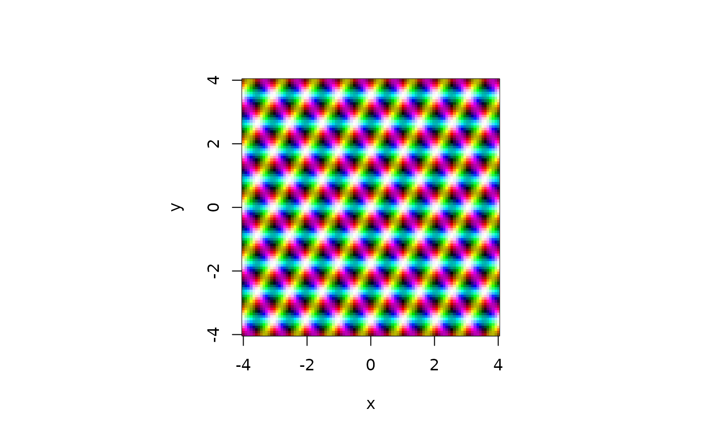
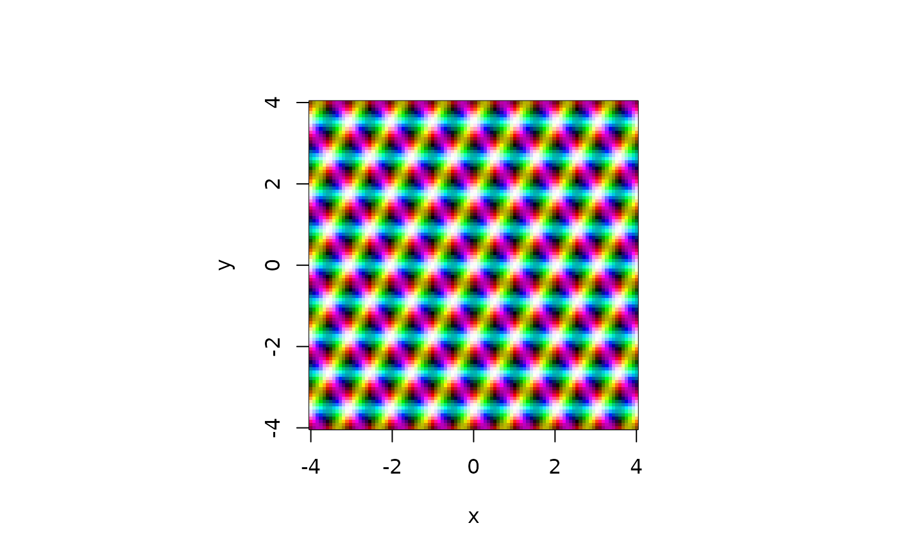
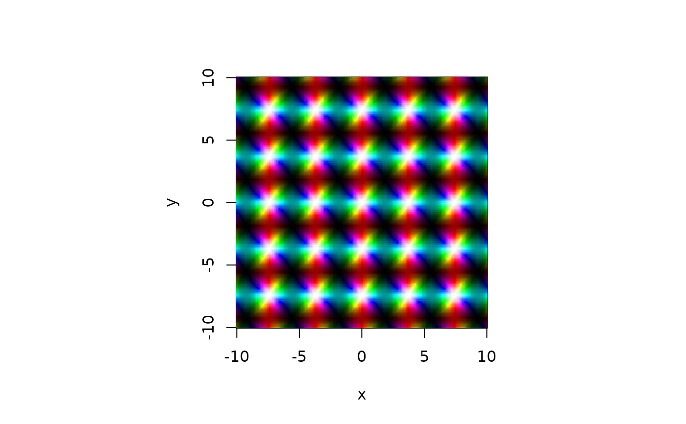
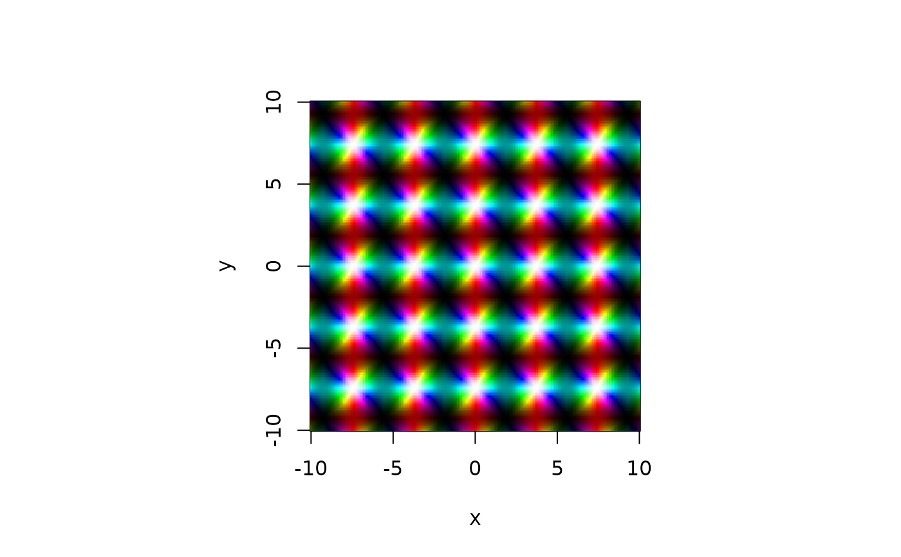

Weierstrass and Jacobi Elliptic Functions
elliptic-package.RdA suite of elliptic and related functions including Weierstrass and Jacobi forms. Also includes various tools for manipulating and visualizing complex functions.
Details
The DESCRIPTION file:
This package was not yet installed at build time.
Index: This package was not yet installed at build time.
The primary function in package elliptic is P(): this
calculates the Weierstrass \(\wp\) function, and may take named
arguments that specify either the invariants g or half
periods Omega. The derivative is given by function Pdash
and the Weierstrass sigma and zeta functions are given by functions
sigma() and zeta() respectively; these are documented in
?P. Jacobi forms are documented under ?sn and modular
forms under ?J.
Notation follows Abramowitz and Stegun (1965) where possible, although
there only real invariants are considered; ?e1e2e3 and
?parameters give a more detailed discussion. Various equations
from AMS-55 are implemented (for fun); the functions are named after
their equation numbers in AMS-55; all references are to this work unless
otherwise indicated.
The package uses Jacobi's theta functions (?theta and
?theta.neville) where possible: they converge very quickly.
Various number-theoretic functions that are required for (eg) converting
a period pair to primitive form (?as.primitive) are implemented;
see ?divisor for a list.
The package also provides some tools for numerical verification of
complex analysis such as contour integration (?myintegrate) and
Newton-Raphson iteration for complex functions
(?newton_raphson).
Complex functions may be visualized using view(); this is
customizable but has an extensive set of built-in colourmaps.
Author
Robin K. S. Hankin [aut, cre] (<https://orcid.org/0000-0001-5982-0415>)
Maintainer: Robin K. S. Hankin <hankin.robin@gmail.com>
Examples
## Example 8, p666, RHS:
P(z=0.07 + 0.1i, g=c(10,2))
#> [1] -22.9745-63.05323i
## Now a nice little plot of the zeta function:
x <- seq(from=-4,to=4,len=100)
z <- outer(x,1i*x,"+")
par(pty="s")
view(x,x,limit(zeta(z,c(1+1i,2-3i))),nlevels=3,scheme=1)
 view(x,x,P(z*3,params=equianharmonic()),real=FALSE)

## Some number theory:
mobius(1:10)
#> [1] 1 -1 -1 0 -1 1 -1 0 0 1
plot(divisor(1:300,k=1),type="s",xlab="n",ylab="divisor(n,1)")
view(x,x,P(z*3,params=equianharmonic()),real=FALSE)

## Some number theory:
mobius(1:10)
#> [1] 1 -1 -1 0 -1 1 -1 0 0 1
plot(divisor(1:300,k=1),type="s",xlab="n",ylab="divisor(n,1)")
 ## Primitive periods:
as.primitive(c(3+4.01i , 7+10i))
#> [1] 1+1.98i -2-2.03i
#> attr(,"class")
#> [1] "primitive"
as.primitive(c(3+4.01i , 7+10i),n=10) # Note difference
#> [1] 1+0.05i 0+1.93i
#> attr(,"class")
#> [1] "primitive"
## Now some contour integration:
f <- function(z){1/z}
u <- function(x){exp(2i*pi*x)}
udash <- function(x){2i*pi*exp(2i*pi*x)}
integrate.contour(f,u,udash) - 2*pi*1i
#> [1] -3.561641e-17-8.881784e-16i
x <- seq(from=-10,to=10,len=200)
z <- outer(x,1i*x,"+")
view(x,x,P(z,params=lemniscatic()),real=FALSE)

view(x,x,P(z,params=pseudolemniscatic()),real=FALSE)
## Primitive periods:
as.primitive(c(3+4.01i , 7+10i))
#> [1] 1+1.98i -2-2.03i
#> attr(,"class")
#> [1] "primitive"
as.primitive(c(3+4.01i , 7+10i),n=10) # Note difference
#> [1] 1+0.05i 0+1.93i
#> attr(,"class")
#> [1] "primitive"
## Now some contour integration:
f <- function(z){1/z}
u <- function(x){exp(2i*pi*x)}
udash <- function(x){2i*pi*exp(2i*pi*x)}
integrate.contour(f,u,udash) - 2*pi*1i
#> [1] -3.561641e-17-8.881784e-16i
x <- seq(from=-10,to=10,len=200)
z <- outer(x,1i*x,"+")
view(x,x,P(z,params=lemniscatic()),real=FALSE)

view(x,x,P(z,params=pseudolemniscatic()),real=FALSE)
 view(x,x,P(z,params=equianharmonic()),real=FALSE)
view(x,x,P(z,params=equianharmonic()),real=FALSE)